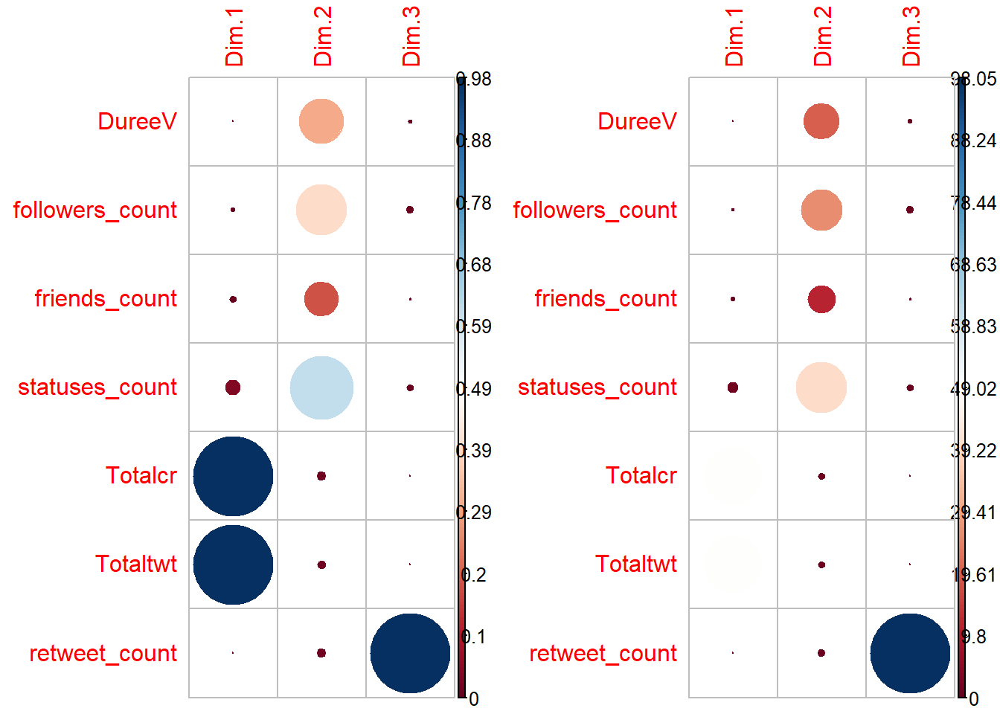
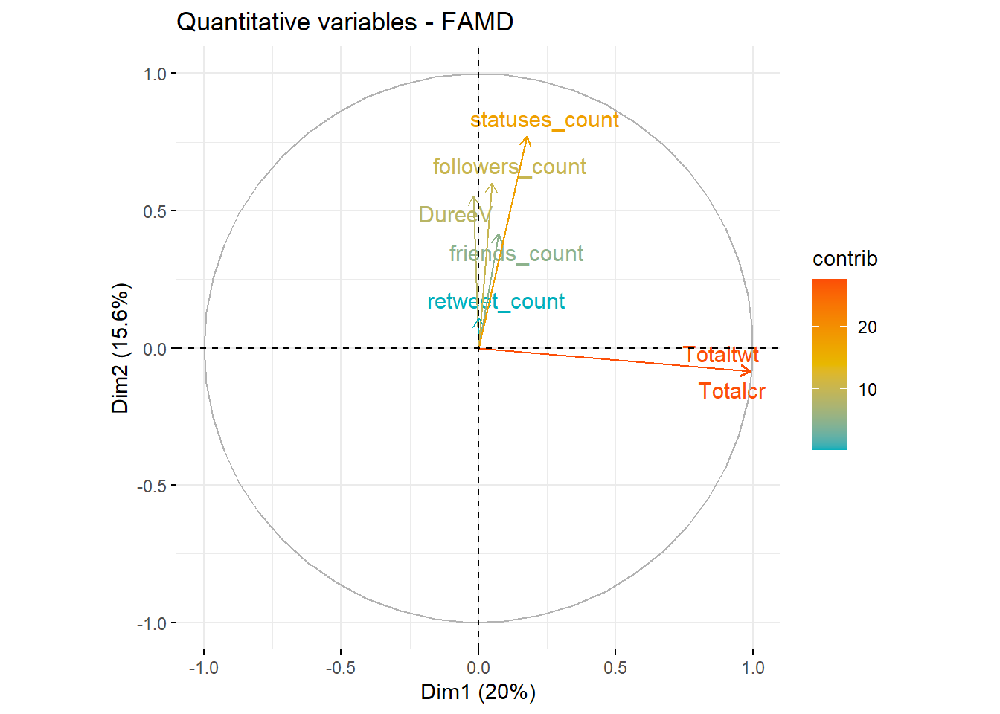
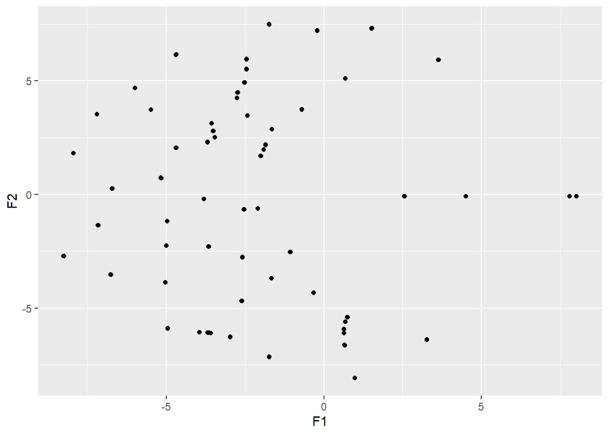

Chapitre 9 Le retour des méthodes factorielles
L’objectif de cette partie est de comprendre l’évolution des différentes techniques de réduction de grands ensembles de données. Leur principe reste de réussir à exprimer sous forme de facteur(s), un ou plusieurs concepts non observés, latents, ou d’intérêts, par le biais de calculs sur les attributs ou propriétés d’une base de données. Replacées dans leur contexte de génèse et vocabulaire, ces méthodes de calculs feront ensuite l’objet d’une description générale, centrée sur les prérequis statistiques et connaissances des modèles mathématiques utilisés. Nous proposerons une application exploratoire via le logiciel R, par un cas pratique avec un dataset de tweets scrappés pour l’exemple sur la thématique du marketing TIC & NTIC.
Quatre algorithmes utilisés en analyse factorielle seront abordés, sous la lumière du cours de Philippe Malbos de Lyon 1 : (Malbos, n.d.)
- Analyse par Composante Principale (PCA)
- Analyse Factorielle sur Données Mixtes (AFDM)
- Analyse/Indexation Sémantique Latente (LSA/I)
- Factorisation de Matrices Non-Négatives (NMF)
Développées dès 1904 par le psychologue Charles Spearman dans une ambition plus confirmatoire et hiérarchique, puis dans les années 1930 par les travaux de Hotelling (Thurstone 1949) et ensuite les travaux de Benzecri dès 1963 dans une dimension cette fois, plus exploratoire, les méthodes d’analyses factorielles se sont proggressivement diluées dans la “boîte à outils” des différentes disciplines et courants académiques de la recherche scientifique. Ses principes de fonctionnement et autres calculs originels ont été confrontées à diverses sources et structures de données, que notre environnement de plus en plus numérique à amener à générer, à une vitesse s’accélérant toujours plus. Benzecri (2006)
A l’issue de ce chapitre il sera possible de dresser un panorama synthtique de la diversité des techniques utilisées ainsi que de comprendre les avantages et inconvénients de chacune, en termes tant, de structures de données, que de modèles mathématiques, ou bien encore de vocabulaire idoine à privilégier afin de pouvoir interpréter convenablement les résultats fournis par ces algorithmes dans un contexte de traitements statistiques de données. (Forsé, n.d.) En effet, l’interaction avec ces interfaces mathématiques sont aujourd’hui largement informatisées, et le travail de d’analyste se complète également par le devoir de savoir expliciter ses “sorties logicielles.” Afin de se soustraire pleinement de l’illusion visuelle, il sera nécessaire pour chaque utilisateur de s’intéresser aux coefficients plus qu’à leurs visualisations potentielles, et donc de raisonner en termes de relations de distances euclidiennes, d’interdépendance et d’écarts angulaires ou encore de corrélation, plutôt que de “proximité.”
La diversité, parfois destabilisante aux premiers abords, des appellations que l’on trouve dans la littérature (ACP/I, AFC/M, LSA/I, NFM…) recoupent la même idée de synthèse des données appliquées selon k dimensions avec des déclinaisons robustes, complexes ou encore probabilistes.
9.1 Méthodes & Données
9.1.1 Principes généraux
L’ensemble des données suivent des traitement obéissants aux règles du calcul matriciel et leur lecture est un prérequis aux explications qui vont suivre. D’un point de vue historique, l’analyse factorielle est une idée issue des courants de recherche en psychologie. L’apport de cette science dans l’application computationnelle de l’analyse factorielle est importante, un des meilleurs packages jamais développé n’est autre que “psych.” Les méthodes de calculs matriciels, comme nous avons pu le voir, ont également pu être généralisées par le développement de la puissance disponible, permettant de prendre en charge des traitements plus importants, liés à la taille, ou bien encore au caractère régulier ou singulier de ces objets.
L’idée essentielle est qu’un objet (physique, symbolique) peut-être décrit par un ensemble de propriétés, d’attributs observables et en ce sens, mesurables. Des relations peuvent exister entre les p variables précitées dont une synthèse factorielle de rang k est possible, exprimant des entitées latentes interprétables. Mathématiquement parlant, le développement accru des travaux de recherche autour de ces méthodes de calculs repose, entre autre, sur des questions comme le caractère unique ou multiple des facteurs / concepts sous jacents que l’on souhaite utiliser pour résumer les données, ou bien encore sur les modalités de calculs, liéaires ou non, des combinaisons factorielles souhaitées.(Fodor 2002)
L’idée principale est de trouver k combinaisons linéaires des p variables qui capturent succéssivement une part maximale de la variance, ce qui minimise réciproquement l’écart total d’erreurs, d’un effectif n d’observations, tel que k << p.
La matrice carrée symétrique de covariance K est obtenue pour un vecteur v normé (||v|| = v⊤v= 1) tel que v⊤ Kv soit maximal. Cela se traduit par la production une à une de p matrices A de corrélations de Pearson de dimensions nixnj, sur lesquelles on applique la méthode des multiplicateurs de Lagrange λ afin de maximiser la variance de chaque matrice Ap. La variance en est la somme pondérée, et sa valeur est reprise dans la cellule Knp de notre matrice de covariance. La diagonale contient alors l’ensemble des valeurs λp, qui ne sont autres que les bases des eigeinvectors, qui serviront de base à l’orthogonalité souhaitée de la projection de la ki dimensions par rapport à la ki-1.
Cette approche est un cas particulier d’un théorème d’algèbre liénaire qu’est le théorème spectral. Pour un ensemble de cas où les solutions sont impossibles, ou restent indéterminées, les matrices cibles ne peuvent être qu’approximatives, ou estimées (nature convexe ou non convexe des interfaces mathématiques utilisées)(delporte2014?). Ces dernières sont alors plus désignées sous le symbole S. Dans le cas d’énonication du théorème, cette matrice S est égale à toute matrice A, multipliée par sa diagonale D et son inverse A-1, tel que S= ADA-1. Pour autant, la plupart des matrices que l’on peut trouver aujourd’hui ne sont pas carrées, et leur structure ne retrace pas une sédimentation et répétition d’un même phénomène de réponse à un questionnaire. En ce sens, pour un tableau d’occurrences de mots, une décomposition selon une généralisation du théorème spectral que l’on appelle Décomposition par Valeurs Singulières au matrice rectangulaires (SVD)
α
\(\Sigma\).
9.1.2 Données
Nous avons scrappé via le package rtweets un ensemble de 4 marqueurs : javascript, Cobol, Python, Java, selon les méthodologies robustes de construction de corpus déjà éprouvées(balech2019?)
On peut supposer a priori que toute chose étant égale par elle même, les distinctions et structurations de la communication autour des langages de programmation soient similaires et uniformes, dans une première proposition relevant du marketing des technologies N/TIC.(benavent?)
Dans un premier temps, nous allons chercher les fichiers cibles que l’on charge dans une liste pour en automatiser l’action de lecture et d’aggrégation des bases de données les unes avec les autres. Chaque extraction de la plateforme Twitter rapporte un ensemble de n tweets, contenant 91 variables, propres à la caractérisation de ces derniers. L’on retrouve des propriétés comme la localisation, la durée de vie, les nombres de posts, abonnées, d’abonnements, nom de compte… C’est à cette étape que la fréquence de publication sert à filtrer manuellement et qualitativement les internautes afin d’auditer les comptes un à un.
###LECTURE DES FICHIERS
data <- list.files("C:/Users/jmonn/AppData/Local/Temp/Temp1_NLPBook-main.zip/NLPBook-main/NLPBook",pattern = "Exemple")
list_df <- lapply(data, function(x) readRDS(x))
df_brut <- bind_rows(list_df)
###
###ELIMINATION DOUBLONS
doublons <- which(duplicated(df_brut$status_id))
t_net_tex <- df_brut[-doublons,]
###
names(t_net_tex)[names(t_net_tex) == 'screen_name'] <- 'vect_exclude'
t_net_tex <- t_net_tex %>% anti_join(vect_exclu,by="vect_exclude")
names(t_net_tex)[names(t_net_tex) == 'vect_exclude'] <- 'screen_name'Après cette étape de constitution, il est nécessaire de supprimer les valeurs et lignes en double. Cette opération permet d’obtenir les tweets dits “primaires” sur une période donnée allant du 30 juillet 2021 au 7 août 2021.De premiers calculs permettent d’observer que l’hypothèse précédente d’homogénéïté de la structure de communication sur Twitter autour de nos quatre langages de programmation n’est pas satisfaisante.
###CALCULS PRELIMINAIRES
#Pourcentages
t_1a <- table(t_net_tex$Marque)
t_net_tex <- t_net_tex%>%filter(is_retweet=="FALSE")
t_1b <- table(t_net_tex$Marque)
t_1perc <- (t_1b/t_1a)*100
t_1perc <- t(t_1perc)
#Dates et maturité du compte
t_net_tex$created_at <- date(t_net_tex$created_at)
t_net_tex$account_created_at <- date(t_net_tex$account_created_at)
t_net_tex$DureeV <- ymd(t_net_tex$created_at)-ymd(t_net_tex$account_created_at)
t_net_tex$DureeV <- as.integer(t_net_tex$DureeV)
#Sous ensemble pour visualisation
t <- t_net_tex%>%select(screen_name,Marque)%>%group_by(Marque)%>%count(screen_name)%>%arrange(desc(n))
ttab <- t %>%mutate(interv = cut(n, breaks=c(1,5,20,50,100,10000),labels = c("<5","<20","<50","100","+")))
t_tab <- table(ttab$Marque,ttab$interv)
library(vcd)## Le chargement a nécessité le package : gridmosaic(~ interv + Marque, data = ttab,shade=T,legend=T, main = "Production des langages")La répartition des tweets primaires pour chaque langage varie de 70% à 15%. Cette première observation peut justifier que l’on souhaite étudier plus en détails le rôles de certaines variables dans les effets de diffusion. La mosaïque nous permet également de voir que les effectifs ne sont pas uninamiment distribués. Nous déduisons la maturité du compte (DureeV) par la soustraction de la date démission du tweet récolté à la création du compte.Une première visualiation filtrée, permet de voir la répartition du nombre d’internautes produisant plus de 10 tweets sur la semaine d’étude, pour chaque langage.
Une première idée est que les communautés et les modes d’apparitions de ces langages étudiés sur Twitter semblent, sur l’échantillon donné, singuliers. Nous proposons de créer un sous ensemble de la base de données propres à chaque formats plébiscités.
#Visualisation
t <- t_net_tex%>%select(screen_name,Marque)%>%group_by(Marque)%>%count(screen_name)%>%arrange(desc(n))
ty <- t_net_tex%>%select(screen_name,Marque)%>%group_by(Marque)%>%count(screen_name)%>%arrange(desc(n))%>%filter(n>3)
ty%>%ggplot(aes(n,reorder(screen_name,n)),size=n)+geom_point() + facet_wrap(~Marque) +scale_x_log10() + theme(axis.text.y.left = element_blank())###
###EDITIONS DES FICHIERS
kable(t_1perc)| Cobol | Java | javascript | Python |
|---|---|---|---|
| 69.65782 | 42.65547 | 15.91388 | 28.40404 |
###9.1.3 Analyse par Composantes Principales (ACP/PCA)
L’ACP et ses dérivées appliquées à des données de comptage comme l’AFCM sous l’influence de J. Benzecri, ont longtemps étés les méthodes “reines,” et restent aujourd’hui, toujours les plus fréquemmment utilisées. Elle vise à un but simple : représenter un ensemble de données comportant p variables, à un plus petit nombre entier k, tel que k combinaisons de ces variables représentent une grandes part de la variance de l’information exprimée dans la base de données. L’algortihme cherche alors k combinaisons linéaires possibles d’attributs, sans que ceux-ci soient trop génériques ou extrêmes, d’un ensemble de données à résumer. L’expression mathématique du résultat représente les k concepts supposés.
En admettant que les combinaisons linéaires passent par le centre O d’un nuage de points de coordonnées (Ox’’ Oy’‘), la variance en chaque point W (Wx Wy) présent dans l’échantillon et différente de O est la distance au carré de la projection de chaque point W’ Wx’ Wy’ à Ox" Oy". On peut donc appliquer ce calcul pour k dimensions propres au nombre de combinaisons ou facteurs exigés de manière plus ou moins supervisée. La part totale de variance correspond à la moyenne de ces variances locales et est ajustée par l’analyse factorielle afin d’être maximisée selon le procédé détaillé ci-dessus.
L’atteinte de ce premier objectif calculatoire de maximisation de la variance permet conséquemment de trouver l’écart d’erreur minimal. Ce dernier est la moyenne du carré des distances entre les points observés Wn et théoriques W’n sur la kn combinaison linéaire.
Le phénomène de prise de masse en fonction de l’âge permet d’admettre, selon l’espèce animale étudiée, un facteur (naturel) de “croissance (naturelle).”(Lemoine and Sartolou 1981) D’autres exemples se concentrent sur des données de natures mixtes (Newhouse et al., n.d.) sinon plus largement issues des sciences sociales, (Blanchard and Patou, n.d.) ou bien encore pour des cas concrets de besoins d’évaluations d’élèves (Vallet 1985)
Historiquement elle a été développée pour analyser des matrices de corrélations multiples où X est une matrice de n individus et p variables. Dans le domaine de l’analyse d’éléments textuels ce tableau correspond au document-term-matrix (dtm) et document-feature-matrix (dfm), où les “individus” sont alors considérés en tant que documents (tweets, reviews, litteratures…) auxquels nous rattachons en colonne, les termes, afin d’en compter chaque occurence.
Notre travail ici est donc de chercher à savoir si les paramètres structurels de chaque compte, traduisent une éventuelle présence différenciée. On sélectionne un sous ensemble de données quantitatives et l’on calcule volontairement ici deux nouvelles variables dépendantes : le volume total de caractères produit sur la plateforme pour un internaute ainsi que le dénombrement de ses tweets. Chaque tweet étant borné à 280 caractères, ces deux variables sont donc liées par un certain effet naturel de “lotissement,” ou croissance par pallier. Contraint et limité par la puissance de calculs et ne pouvant donc faire une ACP sur 50 825 lignes, on filtre l’échantillon sur les tweets ayant rencontrés plus d’un retweet, et exigeons que le modèle soit factorisé en 3 dimensions (k=3). La population étudiée n’est alors plus que composée de 6475 individus et 7 variables quantitatves.
memory.limit(15000000)## [1] 1.5e+07df_pca <- select(t_net_tex,Marque,screen_name,status_id,DureeV,retweet_count,followers_count,friends_count,statuses_count,display_text_width)
df_pca$score <- 1
df_pca <- df_pca%>%group_by(Marque,screen_name)%>%summarise(DureeV,followers_count,friends_count,statuses_count,Totalcr=sum(display_text_width), Totaltwt=sum(score),retweet_count)## `summarise()` has grouped output by 'Marque', 'screen_name'. You can override using the `.groups` argument.###ELIMINATION DOUBLONS
doublons <- which(duplicated(df_pca$screen_name))
df_pca_u <- df_pca[-doublons,]
###MODEL PCA
df_pca_u%>%select(followers_count,friends_count,statuses_count,Totalcr,Totaltwt,DureeV,retweet_count)%>%head(20)## Adding missing grouping variables: `Marque`, `screen_name`## # A tibble: 20 x 9
## # Groups: Marque, screen_name [20]
## Marque screen_name followers_count friends_count statuses_count Totalcr
## <chr> <chr> <int> <int> <int> <dbl>
## 1 Cobol ____ashy 14 447 288 5
## 2 Cobol __Cobol__ 48 70 337 161
## 3 Cobol __filipecosta 17 142 131 63
## 4 Cobol __pimms__ 243 500 9927 5
## 5 Cobol _64_64_128 875 946 63397 136
## 6 Cobol _adriend_ 1687 220 14144 115
## 7 Cobol _FunBot 859 2 243793 85
## 8 Cobol _leandro_x 211 208 967 269
## 9 Cobol _ManojC 329 606 7808 18
## 10 Cobol _Masochysteria 144 68 56963 168
## 11 Cobol _PedroPortela 176 208 25255 178
## 12 Cobol _QiToY 235 225 49170 10
## 13 Cobol _RuanKlein_ 81 182 930 14
## 14 Cobol _solractg 3257 4993 75254 210
## 15 Cobol _StaticVoid 4689 496 23445 153
## 16 Cobol _syotarow 22393 23177 55850 11
## 17 Cobol _vermeer_ 118 120 3254 87
## 18 Cobol _victorsk 385 171 18152 159
## 19 Cobol 02Talon 1452 745 15480 75
## 20 Cobol 0to999 5093 5011 20525 14
## # ... with 3 more variables: Totaltwt <dbl>, DureeV <int>, retweet_count <int>df_pca_uf <- df_pca_u%>%filter(retweet_count>1)
res.pca <- PCA(df_pca_uf,quali.sup = 1:2,scale.unit = TRUE, graph = FALSE,ncp =3)
var <- get_pca_var(res.pca)
set.seed (123)
my.cont.var <- rnorm (7)
# Colorer les variables en fonction de la variable continue
fviz_pca_var(res.pca, col.var = my.cont.var,
gradient.cols = c("red", "Pink", "Purple"),
legend.title = "Cont.Var")fviz_eig(res.pca,
addlabels = TRUE,
ylim = c(0, 40))
Les eigenvectors et eigenvalues sont remarquables dans les cos2 et contributions de nos 7 variables au 3 dimensions souhaitées respectivement. Les deux premières dimensions expriment près de 50% de la variance et les variables naturelles issues de la plateforme sont distinctes de nos deux totaux, mais évoluent avec la maturitée (DureeV) du compte. L’effet de lotissement, ou de croissance par pallier exprimée précedemment s’observe ici dans le sens où ces propriétés peuvent être exprimée en une seule.
par(mfrow=c(1,2))
corrplot(var$cos2, is.corr=FALSE)
corrplot(var$contrib, is.corr=FALSE) 
Ces deux matrices expriment différemment le graphique des dimensions précédentes. Si l’on peut raisonner en terme d’équivalence, la direction des flèches est propre à la couleur des cercles, la “taille” d’un vecteur est proportionnelle à la “taille” des points de corrélation ci-dessus, pour chacune des dimensions 1 et 2. Il est intéressant maintenant de pouvoir proposer un graphique des individus, tout en utilisant les étiquettes qualitatives afin de décrire la composition du nuage de points.
fviz_pca_ind(res.pca,
geom.ind = "point", # Montre les points seulement (mais pas le "text")
col.ind = df_pca_uf$Marque, # colorer by groups
palette = c("#00AFBB", "#E7B800", "#FC4E07","#AA4E07"),
addEllipses = TRUE, # Ellipses de concentration
legend.title = "Groups"
)De prime abord, nous remarquons que les ellipses de confiance se chevauchent et sont toutes centrées sur l’origine du repère. Pour autant, les facteurs exposés ici semblent influer sur la ventilation de la distribution des comptes des internautes.
Pour une analyse détaillée et les détails du code, se réferrer à Kassambora. Le dernier graphique, mélange des données qui ne sont pas traitables directement de manière simultanée par l’ACP, qui fonctionne sur des données exclusivement quantitatives. (La variable “Marque” n’était pas présente sur le graphique des eigeinvectors) Pour ce faire, on propose l’utilisation d’un algorithme factoriel admettant en entrées un fichier de données mixtes, afin de pouvoir pleinement voir les influences d’une variable qualitative propre au langage de programmation (Marque) du tableau de données ci-dessus. (pages?)
9.1.4 Analyse Factorielle sur Données Mixtes (AFDM/FAMD)
Le tableau d’entrées est le même que celui de l’ACP, auquel nous rajoutons la variable des Marques.
df_pca_uf <- df_pca_uf%>%ungroup()
df_famd<- df_pca_uf%>%select(Marque,DureeV,retweet_count,followers_count,friends_count,statuses_count,Totalcr,Totaltwt)
res.famd <- FAMD(df_famd,graph = F, ncp = 3)
fviz_screeplot(res.famd)Les trois premières dimensions groupes près de 40 % de la variance totale de l’échantillon.
# Contribution à la première dimension
g1 <- fviz_contrib (res.famd, "var", axes = 1)
# Contribution à la deuxième dimension
g2 <- fviz_contrib (res.famd, "var", axes = 2)
#Contribution à la troisième dimension
g3 <- fviz_contrib (res.famd, "var", axes = 3)
plot_grid(g1,g2,g3,ncol=3,nrow = 1)Leur description est renseignée pour chacune des dimensions, propre à l’activité mesurée sur le set de données, la maturité du compte, et sa marque. Nous présentons par la suite les résultats principaux d’une AFDM.
fviz_famd_var(res.famd, "quanti.var", col.var = "contrib",
gradient.cols = c("#00AFBB", "#E7B800", "#FC4E07"),
repel = TRUE)
fviz_famd_var(res.famd, "quali.var", col.var = "contrib",
gradient.cols = c("#00AFBB", "#E7B800", "#FC4E07")
)fviz_famd_ind(res.famd, col.ind = "cos2",
gradient.cols = c("#00AFBB", "#E7B800", "#FC4E07"),
repel = T)## Warning: ggrepel: 6461 unlabeled data points (too many overlaps). Consider
## increasing max.overlapsOn peut donc obtenir sur le même modèle que précedemment, les eigen composants des variables quantitatives et qualitatives. La visualisation est similaire à celle obtenue par l’ACP, mais l’on peut faire de même avec la visualisation des modalités de notre variable qualitative, où l’on peut observer un positionnement légèrement différents en terme de contribution aux dimensions.
9.1.5 Analyse Sémantique Latente (ASL/LSA)
L’analyse sémantique latente s’est développée sous le travail des linguistiques, et la généralisation d’outils tels que les moteurs de recherche. (evangelopoulos2012?) Le retour sur histoire que nous fait l’auteur, ainsi que sa description des différents principes de calculs et vigilances pour l’analyste à garder en mémoire, renseigne sur les heuristiques de cette méthode : Son principe fondateur est de réussir à retrouver dans une collection de documents, un ensemble de patterns présents ou absents, dans un système d’équations s’exprimant chacune en fonction des autres. Cette expression réciproque s’opère à l’aide de la décomposittion spectrale de chacun de ses mots. En ce sens, elle peut se comprendre comme un résultat de la recherche allant dans la quantisation des vecteurs, la régression multinomiale, ou bien encore la topologie, comme identifiée par Fodor en 2002, ou d’autres applications croisées. (song2009?)
Le document d’entrée pour la LSA est un VSM, équivalent à la dfm énoncée ci-dessus, appelée A. Au sens de la théorie spectrale (SVD) on obtient :
A = UEVt
avec U = , V =, et E la matrice diagonale, Vt la transposée.
Nous nous intéressons donc à la décomposition du tableau précédent. Nous intégrons donc a notre analyse sur les variables, les éléments textuels. Nous supprimons les lemmes propres au entitées nommées étudiées : Cobol & Javascript.
Pour les détails et l’implémentations du code, se réferrer à C. Benavent.
library(udpipe)
library(quanteda)
library(quanteda.textmodels)
library(stringr)
vect_upos <- c("ADJ","NOUN","VERB")
annot_udd <- df_trt_annot%>%filter(upos%in%vect_upos)
annot_udd <- annot_udd%>%select(Marque,lemma)%>%filter(Marque=="Cobol")
annot_udd <- annot_udd%>%mutate(Off_Acc=ifelse(str_detect(lemma,"@.")==TRUE,"TRUE",
ifelse(str_detect(lemma,"https.")==TRUE,"TRUE",
"FALSE")))
annot_udd <- annot_udd%>%filter(Off_Acc=="FALSE")
dfm_lsa <- dfm(annot_udd$lemma,
tolower = TRUE,
what = "word",
docvars = "Marque")## Warning: 'dfm.character()' is deprecated. Use 'tokens()' first.## Warning: docvars argument is not used.## Warning: '...' should not be used for tokens() arguments; use 'tokens()' first.## Warning: docvars argument is not used.
## Warning: docvars argument is not used.mylsa <- textmodel_lsa(dfm_lsa,2)
proxD<-mylsa$docs[, 1:2]
library(Rtsne)
#rtsne
tsne_out <- Rtsne(proxD, dims = 2, initial_dims = 100,
perplexity = 20, theta = 0.5, check_duplicates = FALSE,
pca = TRUE, max_iter = 300)
x<-tsne_out$Y
x<-as.data.frame(x)
x$F1<-x[,1]
x$F2<-x[,2]
x<-cbind(annot_udd,x)
df<-subset(x) #pour un quartier
library(ggrepel)
lsacob <- ggplot(df,aes(x = F1,y=F2))+geom_point()
prox<-mylsa$features[, 1:2]
terms<-as.data.frame(prox)
#rtsne
tsne_out <- Rtsne(terms, dims = 2, initial_dims = 50,
perplexity = 20, theta = 0.5, check_duplicates = FALSE,
pca = TRUE, max_iter = 300)
plot(tsne_out$Y)x<-tsne_out$Y
terms$term<-row.names(prox)
plot<-cbind(x,terms)
plot$F1<-plot[,1]
plot$F2<-plot[,2]
gglsacob <- ggplot(plot,aes(x = F1,y=F2))+geom_point()+geom_text(aes(label=term),hjust=0.5, vjust=0.5, size=2.5)
###
###
annot_udd <- df_trt_annot%>%filter(upos%in%vect_upos)
annot_udd <- annot_udd%>%select(Marque,lemma)%>%filter(Marque=="javascript")
annot_udd <- annot_udd%>%mutate(Off_Acc=ifelse(str_detect(lemma,"@.")==TRUE,"TRUE",
ifelse(str_detect(lemma,"https.")==TRUE,"TRUE",
"FALSE")))
annot_udd <- annot_udd%>%filter(Off_Acc=="FALSE")
dfm_lsa <- dfm(annot_udd$lemma,
tolower = TRUE,
what = "word",
docvars = "Marque")## Warning: 'dfm.character()' is deprecated. Use 'tokens()' first.
## Warning: docvars argument is not used.## Warning: '...' should not be used for tokens() arguments; use 'tokens()' first.## Warning: docvars argument is not used.
## Warning: docvars argument is not used.dfm_lsa <-
dfm_trim(
dfm_lsa,
min_termfreq = 10)
mylsa <- textmodel_lsa(dfm_lsa,2)
proxD<-mylsa$docs[, 1:2]
library(Rtsne)
#rtsne
tsne_out <- Rtsne(proxD, dims = 2, initial_dims = 100,
perplexity = 20, theta = 0.5, check_duplicates = FALSE,
pca = TRUE, max_iter = 300)
x<-tsne_out$Y
x<-as.data.frame(x)
x$F1<-x[,1]
x$F2<-x[,2]
x<-cbind(annot_udd,x)
df<-subset(x) #pour un quartier
library(ggrepel)
lsajav <- ggplot(df,aes(x = F1,y=F2))+geom_point()
prox<-mylsa$features[, 1:2]
terms<-as.data.frame(prox)
#rtsne
tsne_out <- Rtsne(terms, dims = 2, initial_dims = 50,
perplexity = 20, theta = 0.5, check_duplicates = FALSE,
pca = TRUE, max_iter = 300)
plot(tsne_out$Y)x<-tsne_out$Y
terms$term<-row.names(prox)
plot<-cbind(x,terms)
plot$F1<-plot[,1]
plot$F2<-plot[,2]
gglsajav <- ggplot(plot,aes(x = F1,y=F2))+geom_point()+geom_text(aes(label=term),hjust=0, vjust=0, size=3)lsacobgglsacoblsajav
gglsajavLes différentes visualisations produites montrent que les langages baignent, outre certains phénomènes de pollution, dans un vocabulaire emprunt à leurs domaines technico-fonctionnels propres. On observe la présence des domaines du Web en ce qui concerne “JS” et de la gestion financière des grands groupes pour ce qui concerne le vieil ami Cobol. En outre, les mots associés à ce dernier sont dans une thématique métier plus professionnelle, tant d’un point de vue de l’ingénierie informatique que financière. L’utilisation de javascript semble plus orientée vers son environnement informatique digital, web et outils propres (frameworks et apparentés) plus qu’au domaine fonctionnel sur lesquels il est potentiellement appliqué. Cela peut également expliquer en partie les différentes populations pressenties : évoquer “Cobol” nécessite de s’intéresser à l’informatique, ce langage est inconnu pour bon nombre d’informaticiens débutants et invisible du grand public, en revanche, plein de tutoriels et de parcours de formations proposent des travaux pratiques, qui permettent aux apprennants de développer un robot à l’architecture plus ou moins complexe, dont la durée de vie se limite pour les plus élémentaires qu’à un script javascript.
Cette première analyse sémantique qualifie différemment les comptes étudiés et complète l’analyse des premiers indicateurs soumis à l’ACP/AFDM par une restitution de leurs univers sémantiques. Se concentrant sur les éléments destructurés textuels, cet algortihme est capable de recomposer une structure vectorielle à partir d’estimations algébriques itératives empruntant aux règles de calculs matriciels précedemment énoncées. Réussir à croiser les différents éléments structurels et sémantiques, permet de qualifier un peu mieux la population d’internautes, et de rattacher des éléments d’informations librements exprimés, à des éléments plus latents.
Ici, un modèle simple, exploratoire et pédagoqiue de LSA a été mené. Cependant, difféfentes variantes, plus ou moins probabilistes ou supervisées existent, et leurs spécificités permet de comprendre les équivalences et traits communs entre les divers algortihmes retenus ici pour l’étude. (gaussier2005?)(ding2005?)
9.1.6 Non-negative Matrix Factorization
La branche mathématique appliquée au calcul matriciel développe depuis longtemps un important travail de recherche sur les propriétés mathématiques de cet objet, (chen1984?) dont les problèmes se classifient selon une échelle de difficulté NP. (vavasis2007?) Plusieurs questions ont été abordées, notamment sur l’interprétabilité des facteurs (lee?), l’ajustement de certains paramètres comme la co-entropie, (li2014?) la détection du nombre de composantes, (shitov2017?) ou encore la divergence B. (votte?)
Certaines propriétés des matrices offrent en effet des commodités opérationnelles dans la construction d’architectures techniques computationnelles diverses, notamment dans les domaines du Machine et Deep Learning, mais génère dans un usage statistique scientifique nécessairement de l’incertitude sur l’unicité du résultat obtenu. (campbell1981?)
Un important travail de recherche faisant l’objet d’une thèse en 2014 documente historiquement et techniquement les diverses approches de factorisation matricielle et plus précisément, celles appliquées aux matrices de données non-négatives dont l’hypothèse méthodologique de calculs admettent “la positivité des composantes” ou se basent sur leur “non-négativité.” (limem?) Aujourd’hui, la généralisation de son utilisation est possible pour les utilisateurs de différents langages de programmation,(gaujoux2010?) et plusieurs travaux témoignent de ses applications courantes à divers secteurs : l’analyse d’image, le text mining, (zurada2013?) l’analyse spectrophotométrique, (gillis2014?) ou bien encore l’analyse financière,(cazalet?) et la détection des fake news. (shu2019?)
Ici, le premier pas de l’analyse est de créer une matrice A des termes et des documents. Le système considéré est donc de m langages exprimés via y tweets par t mots. On peut donc définir un ensemble A ∈ R m t de mots relatifs à ces dernières qu’il va falloir factoriser via cet algorithme NMF, en k dimensions, pour générer deux matrices H ∈ R t ket W ∈ R m k représentant l’association aux dimensions du vocabulaire et des marques respectivement. Le regroupement de ce tableau depuis notre base d’étude, appelé “Document-feature-matrix” est un ensemble de features (Mots) associés à chaque groupe (Marques) qui permet de fournir un fichier d’entrée à l’algorithme d’implémentation de l’interface NMF, soit une matrice m t. Notre modèle est dit simple approché, non informé ou pondéré.
Le fonctionnement de cet algorithme de factorisation est de décomposer le fichier d’entrée A en deux matrices, W, tel que W= u x k et H, tel que H = k x v ou k est ici déterminé à l’aide d’une fonction intégrée au package R “NMF,” et déterminé selon le corpus fourni à k = 15 dimensions. Lorsque cet algorithme opère une coefficientisation par approximation de la décomposition du fichier A, en deux fichiers W & H de rang k, il nous permet de réaliser le produit matriciel de ces deux fichiers de sorties, et donc de proposer une réorganisation du fichier A selon k facteurs sous-jacents, et d’ainsi obtenir le rang de factorisation non-négative. De manière naturelle, il serait intéressant de savoir si l’on peut observer un modèle théorique de vocabulaires spécifiques dans la réorganisation finale obtenue. Ici donc, la matrice d’entrée A est composée des 4 langages précités, et de 3641 mots retenus pour l’étude, composer des verbes, noms et adjectifs.
Afin de visualiser les résultats produits, nous utilisons des fonctions de type heatmap, adaptées à la représentations de matrices.
aheatmap(my.nmf@fit@W)aheatmap(my.nmf@fit@H)Les représentations graphiques des matrices W et H permettent d’observer la distributivité des mots selon les facteurs (H) ou les variables (W), le gradient de coloration étant proportionnel à la covariance des éléments. (gaujoux?) En réalisant le produit matriciel de ces deux tableaux il est possible, d’obtenir la liste des mots les plus typiques de la modalité de variable étudiée, ici le langage de programmation. Les matrices de coefficients représentent des résultats intermédiaires, permettant de cenraliser dans un tableau de données l’ensemble des expressions linéaires possibles d’un système en fonction de ses paramètres et positions. Le consensus, s’obtient suites aux différentes itérations demandées, ici fixées à 30.
basismap(my.nmf)coefmap(my.nmf,Colv="basis")consensusmap(my.nmf,Rowv=TRUE, Colv=TRUE, scale="none")tcob## Cobol javascript
## 1 développeur citation
## 2 utiliser parendre
## 3 aimer vuej
## 4 technologie 4tchat
## 5 vouloir css
## 6 langage nuitdebour
## 7 avoir woocommerce
## 8 cobol opencart
## 9 sgbd php
## 10 rigoler ecommerce
## 11 aller webdevembre
## 12 jouer pari
## 13 machine gir
## 14 vieux mrproverber
## 15 falloir symfony
## 16 mettre prestashop
## 17 bancaire seo
## 18 it faire
## 19 miagiste france
## 20 parler saintdeni
## 21 indien livraison
## 22 banque magento
## 23 pouvoir castre
## 24 développer drogue
## 25 oui nuitdebout
## 26 incroyable rastabot
## 27 fête mrproverbe
## 28 chance passer
## 29 ancien avoir
## 30 ordinateur plan
## 31 cours disponible
## 32 dernier weed
## 33 étonner dispo
## 34 apprendre pass
## 35 mauvais mode
## 36 trouver javascriptjob
## 37 taf commande
## 38 jour test
## 39 augmenter sanitaire
## 40 découvrir fafa
## 41 module carrer
## 42 gratuit sécurité
## 43 passer réduire
## 44 finir livraire
## 45 coder tout
## 46 ben code
## 47 source compilateur
## 48 raison python
## 49 truc &
## 50 tourner pouvoir9.2 Conclusions
Ces techniques se sont développées en se confrontant aux différentes structures de données et développements des courants de recherche en mathématiques. Leur existence n’empêche pas leur utilisation conjointe à des fins de classifications, ou réduction de dimensions. (hassani2020?)
Part ailleurs, d’autres modèles existent et permettre de comprendre les différentes équivalences entre les méthodes décrites ci-dessus. (buntine2002?) En ce sens, le travail de Pochon en 2020 dresse un panorama plus situé, des différentes techniques et de leurs enjeux, tant en termes d’accessibilité, que d’applicabilité. (pochon?)
A vos claviers ?